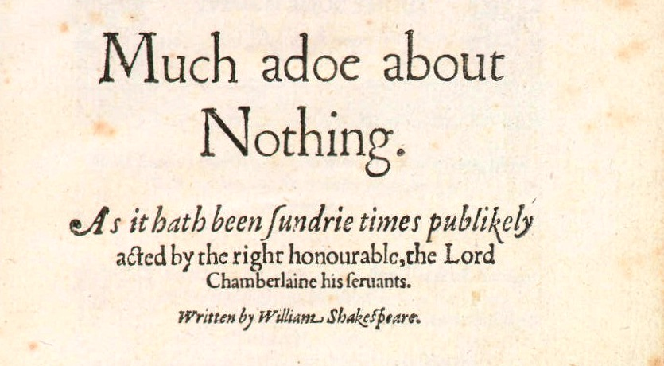

Skolemization

- Try prove ISk from IAx
- Prove IAx from ISk
- Typically succeeds
- Incomplete verification, but catches stupid mistakes
- Generate an ε-term for the Skolem symbol
- Will ATP system developers do that?
- Prove ISk from { IAx, εSk }
- It can be done
- ε-term provides meaning, e.g., looking at proofs
- Relies on a meta-argument
- Use a trusted Skolemizer to generate a trusted Skolemization TSk
- Skolemize same variable, same symbol,
- It can be (is being!) done
- Prove ISk from TSk
- Likely to succeed
- Vulnerable to optimizations